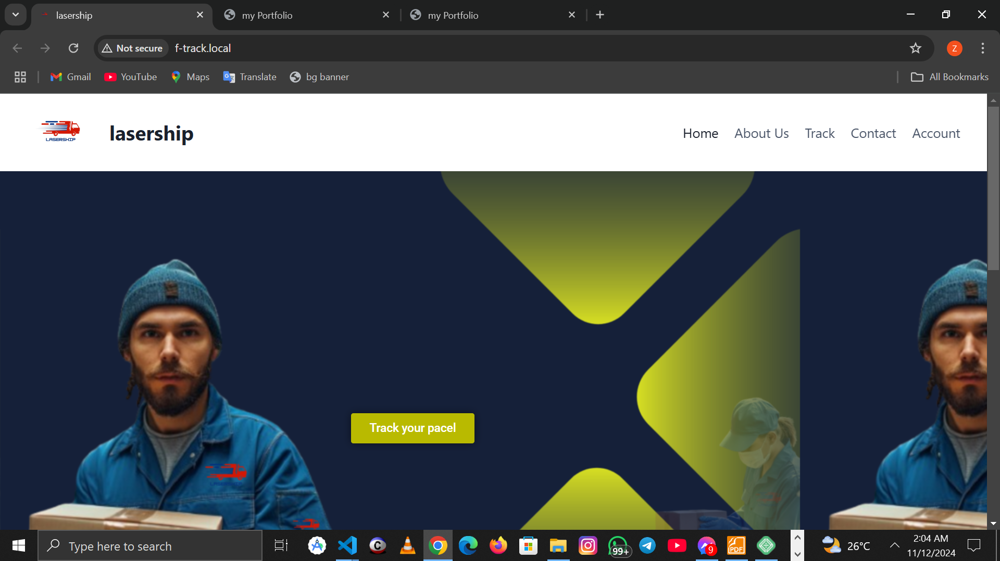
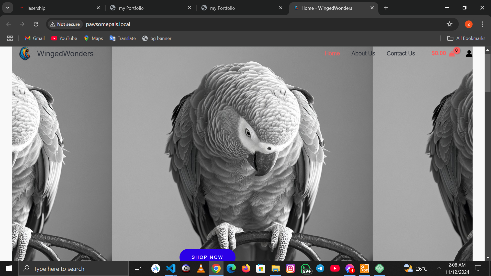

PRODUCT
My Projects
-
>
Project 1
building a tracking website for a client. in doing this i divided my work into 3 phases which are
Phase 1: Planning and Research (Days 1-3)
1. Define project scope and objectives.
2. Identify target audience and user requirements.
3. Conduct market research and analysis.
4. Determine tracking requirements (e.g., page views, events).
5. Choose a tracking platform (e.g., Google Analytics).
Phase 2: Design and Prototyping (Days 4-7)
1. Create wireframes and prototypes.
2. Design a visually appealing UI.
3. Plan dashboard layout and metrics visualization.
4. Develop a functional specification document.
Phase 3: Front-end Development (Days 8-14)
1. Write HTML, CSS, and JavaScript code.
2. Implement tracking code (e.g., Google Analytics).
3. Integrate with backend API (if necessary).
4. Test and debug front-end functionality.
Phase 4: Back-end Development (Days 15-21)
1. Choose a programming language (e.g., PHP, Python).
2. Design and implement database schema.
3. Develop API for data retrieval and storage.
4. Integrate with front-end.
Phase 5: Testing and Quality Assurance (Days 22-28)
1. Conduct unit testing and integration testing.
2. Test tracking functionality.
3. Perform security audits.
4. Ensure cross-browser compatibility.
-
>
Project 2
my next project was building an eccomerce website for another client(African grey parrot).
it was divided into 5 phasesProject Overview
Client: [Client Name]
Project Type: E-commerce Website
Niche: African Grey Parrots and Accessories
Target Audience: Parrot enthusiasts, breeders, and owners
Platforms: Web, Mobile
Requirements Gathering
1. Client questionnaire:
- What products will you sell?
- What is your brand identity?
- Do you have existing branding guidelines?
- What are your business goals?
2. Competitor analysis:
- Identify similar websites
- Analyze features, design, and functionality
3. Target audience analysis:
- Age range
- Interests
- Pain points
Technical Requirements
1. E-commerce platform: Shopify or WooCommerce
2. Payment gateways: PayPal, Stripe
3. Shipping integration: [Client's preferred shipping provider]
4. Product management: Variable products, product variations
5. Responsive design: Mobile-friendly, tablet-friendly
6. Security: SSL certificate, regular updates
7. Analytics: Google Analytics integration
Design Requirements
1. Branding:
- Logo design
- Color scheme
- Typography
2. UI/UX:
- Clean, modern design
- Easy navigation
- Prominent call-to-actions
3. Product page design:
- High-quality product images
- Detailed product descriptions
- Product reviews and ratings
Development Roadmap
Phase 1: Planning and Research (5 days)
1. Client onboarding
2. Requirements gathering
3. Competitor analysis
4. Technical requirements documentation
Phase 2: Design (10 days)
1. Branding design
2. UI/UX design
3. Product page design
4. Design review and revisions
Phase 3: Front-end Development (15 days)
1. HTML, CSS, JavaScript development
2. Responsive design implementation
3. Browser testing and debugging
Phase 4: Back-end Development (15 days)
1. E-commerce platform setup
2. Payment gateway integration
3. Shipping integration
4. Product management setupPhase 5: Testing and Launch (5 days)
1. Unit testing
2. Integration testing
3. Launch preparation
4. Post-launch review and revisions
Timeline
Estimated project duration: 50 days
Budget
Estimated project budget: $10,000 - $15,000
Deliverables
1. Fully functional e-commerce website
2. Branding guidelines document
3. Design files (PSD, Sketch)
4. Front-end and back-end code
5. Testing and quality assurance report
Maintenance and Support
1. Regular software updates
2. Security monitoring
3. Performance optimization
4. Content updates and additions